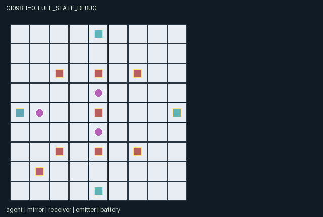

GI098 / SPATIAL
棱镜公地
工人旋转或锁定共享镜面，引导逐格传播的光脉冲，并协调同一能源池。
Original saved demonstration
Recorded native state, often authored scripts or interventions; information scope and failures are preserved in the original provenance. This is a saved demonstration, not live browser play.

Release verification episode
Untrained uniform legal actions. Actual JAX state sampled along the full original episode; full-state debug camera. No human performance or learning claim.

Run this game
crucibles play --game 98
Start Python locally, then open the address printed by the terminal. Installation, multiplayer, takeover and keyboard controls →
Objective, rewards & ending
Exact task contract
{
"objective": "Charge all three receivers to three. Each role gains more from its own receiver; launch credit and the shared completion bonus create additional motives to assist.",
"natural_termination": "All receiver charges equal three. Otherwise truncate at 96 nonterminal steps. Natural success takes precedence on the horizon; terminal raw calls are absorbing and reward zero.",
"interaction": "A shared movable-worker optical board. Adjacent workers turn or clamp the same mirrors, spending common energy. Pulses take one cell per tick, reflect at actual mirror cells, and are consumed by receivers or board exit/TTL. A partner can reroute a pulse while it travels, deny a turn by clamping, or restore energy at a distant pump.",
"observation_access": "All board geometry and dynamic fields are public. All entity visibility masks are true; the pulse active mask indicates whether a moving pulse exists. The policy receives all public dynamic coordinates, attributes and event flags, plus its role index. The static floor map is public."
}Declared per-step reward bounds: -1 to 10. Observability: fully_observable.
Rules
- Three workers share seven mirrors, one emitter and one rechargeable energy pool.
- Move to a mirror to rotate it, or lock its current direction while a pulse is travelling.
- The emitter launches one eastward pulse at a time. It travels one real cell each tick, for at most forty ticks.
- Transparent mirrors pass straight; slash and backslash mirrors reflect using the displayed direction.
- Every turn or clamp costs one shared energy; a launch costs three. The pump restores up to two.
- Each receiver needs three pulses. Private receiver rewards, launch credit and joint completion reward coexist.
Original mechanism document (historical status wording retained)
# Prism Commons — game-v3-00098
Three mobile workers share a 9 by 9 optical workshop. Their own receivers are north (role 0), east (role 1) and south (role 2). Seven mirrors occupy real board cells; one emitter launches eastward from (0,4), and a pump at (1,7) replenishes the same energy pool used by everyone. The task is three deliveries to every receiver within at most 96 nonterminal steps.
## Rules and temporal consequences
Actions 0–4 wait or move one cell north/east/south/west. Action 5 rotates the nearest mirror within Manhattan distance one through transparent, slash and backslash, spending one common energy and locking it against manipulation for the next two calls. Action 6 spends one energy to clamp the current orientation for five subsequent calls. Lowest mirror index resolves equal distances. A mirror still locked at the input of a call cannot be manipulated on that call, even if its timer declines to zero.
Action 7 launches only while adjacent to the emitter, no other pulse is active, and at least three energy remain. Action 8 pumps up to two energy while adjacent to the battery, capped at twenty. A launch costs the acting role one reward; turns and clamps cost energy, without an extra private reward penalty. Contested operations use rotating role priority. No worker owns a particular mirror.
A live pulse, including a newly launched pulse, moves exactly one cell each call. Direction indices are east/south/west/north. Slash reflection maps d to 3-d; backslash uses [1,0,3,2]. Transparent mirrors preserve direction. Entering any receiver consumes the pulse; only an unfilled slot gains charge. Board exit or exhaustion of the forty-cell propagation budget also ends the pulse, preserving its last in-bounds position. Workers do not block light. The off-axis mirrors permit detours and loops, but the TTL prevents an unbounded loop.
Each new delivery pays four to its receiver's role and one to its launcher. Filling all receivers pays four to everyone and ends naturally. The last state is preserved; no raw auto-reset occurs. A pulse reaching an already full receiver is consumed with no delivery reward.
## Causal interdependence and strategy hypotheses
A worker at the central mirror can send another worker's in-flight pulse north, east or south. Its partner can lock that direction before the pulse arrives, or spend scarce shared energy on a conflicting turn. Pumping consumes a worker's time away from the central routing contest and makes later partners' launches feasible. These are changes to geometry, resources and private returns, not independent parallel navigation tasks.
Plausible approaches include time-sharing the central route, precommitting a useful optical configuration with clamps, or prioritizing one's own receiver while another role supplies the pump and launches. Off-axis mirror settings can create longer routes and timing windows. Their practical value is unmeasured. The paired witness changes only role 2's central-mirror action after a shared pulse prefix; it proposes an effect on roles 0 and 1.
All dynamic board information, attributes and event flags are public in the 73-column observation. The scene binds those actual arrays; beam coordinates are propagated state, not decorative interpolation. Mirror lock is a persistent level rather than a fresh turn event.
## Declared invariants and prospective variations
Manual movement keeps three distinct worker positions within the board. Energy remains in [0,20], mirror orientations in [0,2], locks in [0,5], receiver charges in [0,3], pulse TTL in [0,40], and the pulse position remains in bounds even after exiting. There is at most one active pulse; no reward is issued for a receiver slot twice. These are intended source invariants, not tested receipts.
A separately frozen variant could change recipient assignment, mirror coordinates, pumping access, launch/turn costs or commitment duration. Such changes would alter assistance, delay and denial incentives; this source implements one fixed instance only.
## Literal source evidence
**Shared-resource commitment**
```python
L102: turn = (a[i] == 5) & near & unlocked & (q["energy"][0] > 0)
L103: clamp = (a[i] == 6) & near & unlocked & (q["energy"][0] > 0)
L104: q["mirror_dir"] = q["mirror_dir"].at[target].set(
L105: jnp.where(turn, (q["mirror_dir"][target] + 1) % 3, q["mirror_dir"][target]))
L106: q["mirror_lock"] = q["mirror_lock"].at[target].set(
```
**Shared launch preconditions**
```python
L111: fire = (a[i] == 7) & at_source & ~q["beam_active"][0] & (q["energy"][0] >= 3)
L112: q["beam_active"] = q["beam_active"] | fire
L113: q["beam_pos"] = jnp.where(fire, q["emitter_pos"], q["beam_pos"])
L114: q["beam_dir"] = jnp.where(fire, jnp.zeros((1,), dtype=jnp.int32), q["beam_dir"])
L115: q["beam_ttl"] = jnp.where(fire, jnp.array([40], dtype=jnp.int32), q["beam_ttl"])
L116: q["beam_owner"] = jnp.where(fire, jnp.array([i], dtype=jnp.int32), q["beam_owner"])
L117: q["energy"] = q["energy"] - 3 * fire.astype(jnp.int32)
```
**Actual one-cell propagation**
```python
L129: proposed = n["beam_pos"][0] + directions[n["beam_dir"][0]]
L130: inside = jnp.all((proposed >= 0) & (proposed <= 8))
L131: live = n["beam_active"][0]
L132: visit = live & inside
L133: n["beam_pos"] = jnp.where(visit, proposed[None, :], n["beam_pos"])
```
**Bounded receiver effect**
```python
L143: n["delivery_event"] = receiver_hit & (n["receiver_charge"] < 3)
L144: n["receiver_charge"] = jnp.minimum(n["receiver_charge"] + n["delivery_event"].astype(jnp.int32), 3)
L145: n["beam_ttl"] = jnp.where(live, jnp.maximum(n["beam_ttl"] - 1, 0), 0)
L146: n["beam_active"] = jnp.array([visit & ~jnp.any(receiver_hit) & (n["beam_ttl"][0] > 0)], dtype=jnp.bool_)
```
**Private and shared payoffs**
```python
L152: rewards = 4 * n["delivery_event"].astype(jnp.int32)
L153: rewards = rewards + ((jnp.arange(3) == n["beam_owner"][0]) & jnp.any(n["delivery_event"])).astype(jnp.int32)
L154: rewards = rewards - (jnp.arange(3) == firing_actor).astype(jnp.int32) + 4 * success.astype(jnp.int32)
```
**Absorbing raw state**
```python
L159: next_state = jax.tree.map(lambda old, new: jnp.where(state["done"], old, new), state, proposed)
L160: rewards = jnp.where(state["done"], jnp.zeros((3,), dtype=jnp.float32), rewards)
L161: dones = jnp.full((3,), next_state["done"], dtype=jnp.bool_)
L162: info = {"done_all": next_state["done"], "terminated": next_state["terminated"],
L163: "truncated": next_state["truncated"]}
```
## Author boundary and provenance
This package is authored, frozen and **not executed**. Only the assigned batch's eight design/request files, delivery requirements, six contract/interface files and five supplied official reference files were inputs. There was no candidate import, JAX/NumPy import, compiler, contract validator, simulator, training, SSH or network operation. The only local source check is Python AST parsing; JSON parsing and SHA-256 establish file syntax and identity, not runtime validity.
All dynamics and integer design fields use fixed-shape int32/bool arrays; observations and rewards are float32. The supplied reset and step keys are unused because this original instance is deterministic. The key is not duplicated into state. Natural completion has priority at the horizon. A terminal raw call preserves every state leaf and observation, keeps the clock unchanged, returns zero reward and preserves its cause flags. The outer training wrapper remains responsible for resetting.
Unavailable contextual intents and blocked movement are legal attempts with no effect. Out-of-range or masked actions become wait. Normal manual movement uses rotating role priority (clock modulo the role count), refuses occupied target cells and has no implicit swap. This is a public rule. Every script and paired branch in playthrough.json is UNEXECUTED_AUTHOR_HYPOTHESIS; it contains actions and intended differences only, with no invented rollout states, returns or successful-completion claims.
## Supplied reference use
The supplied official JaxMARL README informed the distinction between this fixed-array kernel and an external agent-keyed parallel API adapter with an __all__ done entry. The supplied Pgx README informed explicit legal-action and terminal-state metadata and the separation of caller keys from hidden state. The supplied Craftax README informed the goal of a persistent spatial world with real objects, resource use and visible consequences. No existing game map, benchmark implementation, game rules or upstream code was copied.
PureJaxRL and the supplied Craftax_Baselines PPO-RNN file were read as algorithm/integration references only. They are not game libraries and are not incorporated here. This package does not replace the frozen experimental learner or implement the coordinator's separate community adapter and replay runtime. All five input snapshots and their actual hashes are recorded in generation_record.json.
Reference attribution: JaxMARL (Rutherford et al., NeurIPS Datasets and Benchmarks 2024), Pgx (Koyamada et al., NeurIPS 2023), Craftax (Matthews et al., ICML 2024), and PureJaxRL/Discovered Policy Optimisation (Lu et al., NeurIPS 2022). The Craftax PPO-RNN integration source credits Chris Lu's PureJaxRL implementation. No license from those references is asserted to cover this new author's own rules or source.
## Scientific limits
The intended strategies and interventions are hypotheses from source reasoning. Static syntax and real future causal replay do not establish learnability, optimality, solvability, strategic richness, non-isomorphism, generalization or meta-learning transfer. Negative, failed, zero-effect and indeterminate validation outcomes must remain visible. No reward, success-count, percentage or seed-count acceptance gate is introduced. Rule, role and layout variations mentioned below are prospective design possibilities, not implemented sampled task distributions or measured results.
Commands
Roles & abilities
agent_0 North receiver beneficiary and mobile mirror worker
agent_1 East receiver beneficiary and mobile mirror worker
agent_2 South receiver beneficiary and mobile mirror worker
Observation permissions
Training receives only the original observation rows. Role cameras use declared visibility; debug cameras are explicitly marked. Local benchmark records log debug exposure and role takeover history.
Exact observation layout
[
{
"slice": [
0,
1
],
"meaning": "Observer role index: 0 north receiver, 1 east receiver, 2 south receiver",
"visibility": "self"
},
{
"slice": [
1,
6
],
"meaning": "Clock, shared energy, joint done, natural termination, time truncation",
"visibility": "public"
},
{
"slice": [
6,
12
],
"meaning": "All three workers' x,y positions",
"visibility": "public"
},
{
"slice": [
12,
26
],
"meaning": "Seven mirror x,y positions in manifest order",
"visibility": "public"
},
{
"slice": [
26,
33
],
"meaning": "Mirror orientation: 0 transparent, 1 slash, 2 backslash",
"visibility": "public"
},
{
"slice": [
33,
40
],
"meaning": "Mirror commitment timers",
"visibility": "public"
},
{
"slice": [
40,
46
],
"meaning": "Receiver x,y positions, ordered north/east/south",
"visibility": "public"
},
{
"slice": [
46,
49
],
"meaning": "Receiver charges in [0,3]",
"visibility": "public"
},
{
"slice": [
49,
51
],
"meaning": "Emitter x,y",
"visibility": "public"
},
{
"slice": [
51,
53
],
"meaning": "Pump x,y",
"visibility": "public"
},
{
"slice": [
53,
55
],
"meaning": "Current or last pulse x,y",
"visibility": "public"
},
{
"slice": [
55,
56
],
"meaning": "Pulse active flag",
"visibility": "public"
},
{
"slice": [
56,
57
],
"meaning": "Pulse direction index",
"visibility": "public"
},
{
"slice": [
57,
58
],
"meaning": "Pulse propagation ticks remaining",
"visibility": "public"
},
{
"slice": [
58,
59
],
"meaning": "Pulse launcher index; -1 before first launch",
"visibility": "public"
},
{
"slice": [
59,
66
],
"meaning": "This tick's mirror reorientation flags",
"visibility": "public"
},
{
"slice": [
66,
69
],
"meaning": "This tick's newly credited receiver deliveries",
"visibility": "public"
},
{
"slice": [
69,
70
],
"meaning": "This tick's pulse-launch flag",
"visibility": "public"
},
{
"slice": [
70,
73
],
"meaning": "This tick's successful pump actions by role",
"visibility": "public"
}
]Entity visibility & attributes
[
{
"id": "agent",
"kind": "agent",
"count": 3,
"position": [
"agent_pos"
],
"active": [
"agent_active"
],
"visibility": [
"agent_vis"
],
"attributes": []
},
{
"id": "mirror",
"kind": "object",
"count": 7,
"position": [
"mirror_pos"
],
"active": [
"mirror_active"
],
"visibility": [
"mirror_vis"
],
"attributes": [
{
"state_path": [
"mirror_dir"
],
"meaning": "0 straight-through; 1 slash; 2 backslash",
"display": "category"
},
{
"state_path": [
"mirror_lock"
],
"meaning": "Subsequent ticks during which reorientation or clamping is refused",
"display": "bar"
}
]
},
{
"id": "receiver",
"kind": "landmark",
"count": 3,
"position": [
"receiver_pos"
],
"active": [
"receiver_active"
],
"visibility": [
"receiver_vis"
],
"attributes": [
{
"state_path": [
"receiver_charge"
],
"meaning": "Stored pulse deliveries; each receiver needs three",
"display": "bar"
}
]
},
{
"id": "emitter",
"kind": "resource",
"count": 1,
"position": [
"emitter_pos"
],
"active": [
"emitter_active"
],
"visibility": [
"emitter_vis"
],
"attributes": [
{
"state_path": [
"energy"
],
"meaning": "Shared energy available for turns, clamps and pulse launches",
"display": "bar"
}
]
},
{
"id": "battery",
"kind": "resource",
"count": 1,
"position": [
"battery_pos"
],
"active": [
"battery_active"
],
"visibility": [
"battery_vis"
],
"attributes": []
},
{
"id": "beam",
"kind": "object",
"count": 1,
"position": [
"beam_pos"
],
"active": [
"beam_active"
],
"visibility": [
"beam_vis"
],
"attributes": [
{
"state_path": [
"beam_dir"
],
"meaning": "0 east, 1 south, 2 west, 3 north",
"display": "direction"
},
{
"state_path": [
"beam_ttl"
],
"meaning": "Remaining one-cell propagation budget",
"display": "bar"
},
{
"state_path": [
"beam_owner"
],
"meaning": "Launching role index; minus one before the first pulse",
"display": "category"
}
]
}
]Actual verification & provenance
Per-game execution receipt
{
"game": "gi098",
"status": "PASS",
"verification_revision": 2,
"source_sha256": "f11f7fd57667a5c2c1e4c72e4567bf5cc1e7ba2b269fa347a2c89b2926c4eeb3",
"seed": 20261101,
"runtime": {
"jax": "0.4.38",
"numpy": "1.26.4",
"devices": [
"TFRT_CPU_0"
]
},
"dimensions": {
"num_agents": 3,
"observation_size": 73,
"num_actions": 9,
"max_steps": 96
},
"checks": {
"eager_reset": {
"status": "PASS",
"seconds": 0.5489370822906494
},
"observation_spaces_legal_masks": {
"status": "PASS",
"seconds": 0.1979825496673584
},
"eager_step": {
"status": "PASS",
"seconds": 2.0341882705688477
},
"jit_reset": {
"status": "PASS",
"seconds": 0.049837350845336914
},
"jit_step": {
"status": "PASS",
"seconds": 0.5766913890838623
},
"eager_jit_integer_parity_float_measurement": {
"status": "PASS",
"seconds": 0.0009999275207519531
},
"jit_vmap_reset": {
"status": "PASS",
"seconds": 0.08191609382629395
},
"jit_vmap_step": {
"status": "PASS",
"seconds": 0.8972585201263428
},
"outer_autoreset_api": {
"status": "PASS",
"seconds": 0.5913238525390625
},
"full_original_horizon_episode_and_render": {
"status": "PASS",
"seconds": 1.4273004531860352
}
},
"human_scores": null,
"browser_controls": "PENDING",
"failures": [],
"elapsed_seconds": 7.185787916183472,
"float_parity_max_abs": 0.0,
"numerical_parity": "EXACT",
"raw_terminal_absorbing": "PASS",
"terminal_outer_reset": "PASS",
"episode_steps": 96,
"scripted_random_returns": [
0.0,
4.0,
0.0
],
"terminal": true,
"demo_information": "FULL_STATE_DEBUG",
"demo_frames": 25,
"render_roles_checked": 3
}Chromium control verification
{
"game": "gi098",
"status": "PASS",
"human_scores": null,
"engineering": true,
"checks": [
"catalog_selected_and_real_native_reset",
"dom_queue_and_native_step",
"second_participant_ownership_and_native_joint_step",
"all_roles_individually_controllable_no_role_cap",
"explicit_debug_camera",
"release_to_pure_ai_without_reset"
],
"ui_sha256": "15b5861d23b3c42811865c954d5a988280bbfd21cf8e93754be2437a027158c5",
"seconds": 3.2123324871063232
}Original identity and file hashes
{
"id": 98,
"key": "gi098",
"title": "棱镜公地",
"summary": "工人旋转或锁定共享镜面，引导逐格传播的光脉冲，并协调同一能源池。",
"tags": [
"光路协作",
"共享能源"
],
"family": "spatial",
"dimensions": {
"num_agents": 3,
"observation_size": 73,
"num_actions": 9,
"max_steps": 96
},
"source_sha256": "f11f7fd57667a5c2c1e4c72e4567bf5cc1e7ba2b269fa347a2c89b2926c4eeb3",
"manifest_sha256": "e28d19763f43fef951c1798b1461cb7a7b6ab7191664e4dde163ec17505575d8",
"files": [
{
"file": "candidate.py",
"sha256": "f11f7fd57667a5c2c1e4c72e4567bf5cc1e7ba2b269fa347a2c89b2926c4eeb3",
"bytes": 9589,
"origin": "work/exp_2/game_incubator_v3/community_games222_225_visualization_root222_v1/native154_candidate/registry/v2/games/game-v3-00098/candidate.py"
},
{
"file": "manifest.json",
"sha256": "e28d19763f43fef951c1798b1461cb7a7b6ab7191664e4dde163ec17505575d8",
"bytes": 15256,
"origin": "work/exp_2/game_incubator_v3/community_games222_225_visualization_root222_v1/native154_candidate/registry/v2/games/game-v3-00098/manifest.json"
},
{
"file": "scene.json",
"sha256": "26abfffb418ad2dd1eb7b9cb8a4548a00d2b6cceb7684a5a8af87b46a39d05e9",
"bytes": 7719,
"origin": "work/exp_2/game_incubator_v3/community_games222_225_visualization_root222_v1/native154_candidate/registry/v2/games/game-v3-00098/scene.json"
},
{
"file": "mechanism.md",
"sha256": "429eda34670d9c87ce8cdb31018963190f04b3f802a0a2748cb7de92a6224a55",
"bytes": 10278,
"origin": "work/exp_2/game_incubator_v3/sources/game-v3-00098/attempt_00/mechanism.md"
},
{
"file": "playthrough.json",
"sha256": "ca60e0dfe7f5d5341a0bfed52d5309c6678c807a3f611c2edafe9a71535f7014",
"bytes": 3765,
"origin": "work/exp_2/game_incubator_v3/sources/game-v3-00098/attempt_00/playthrough.json"
}
],
"original_status": "NATIVE154_REFERENCE",
"original_saved_replay": true,
"release_validation": "PASS",
"human_scores": null,
"browser_validation": "PASS"
}